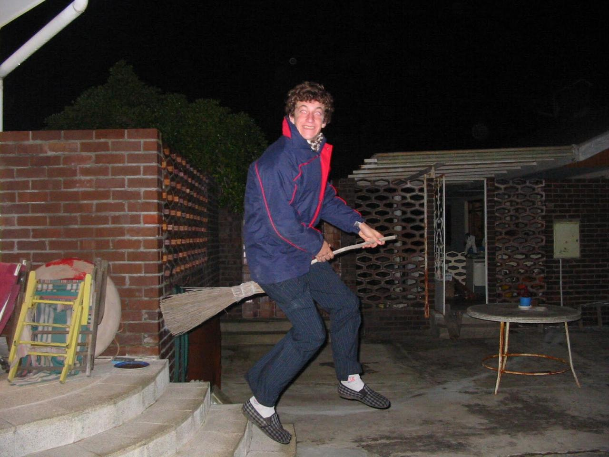

Curious Without an Agenda

Me, around the time I didn't know what came next
When I finished school, I paged through the Stellenbosch University brochure trying to pick a degree. Most options seemed to involve talking about work, measuring it or managing it. I wanted to make real things, so I chose mechanical engineering.
My dad was a mechanical engineer with his own factory, and I’d grown up obsessed with rockets and fighter jets. It seemed like a good fit.
The degree was harder to love than I expected. By graduation, I was exhausted. While my friends started their first jobs, I moved into my parents’ basement for six months. I played computer games, surfed, and helped a friend plan a movie that never really got made.
At a party, I met a guy building a tech startup. I didn’t know what “tech” meant beyond computer games, so I asked questions.
He invited me to spend a day with his team in a house overlooking the sea in Bantry Bay. They gave me a Python problem. I’d never heard of Python, so I spent the day Googling it.
He told me to learn it for a month and come back. I didn’t realise he was thinking of hiring me. I just took the advice.
Then Malan, a friend’s older brother, called about a two-week project: find out who in South Africa was still using Mxit.
I’d never done market research. So I wrote 20 questions, had Malan check them, printed copies and drove to the nearest mall.
Security eventually asked me to stop, so I went to the next mall.
Soon, four or five of us were interviewing people every morning. We added an SMS survey and collected well over a thousand responses.
The news said WhatsApp had won. But many people’s friends and family didn’t have smartphones yet. Mxit worked on their phones, so they still used it every day.
Werner and I worked through the night on the report with Malan’s feedback. We printed copies in a university lab at 5 a.m. for a 7 a.m. meeting.
Only then did we learn it was for investors deciding whether to buy the company. They spent more time on our report than almost anything else.
What stuck
Two lessons have stayed with me.
First, be curious without an agenda. I didn’t have a label for myself. I asked people what they did, how it worked and why anyone paid for it. Then I did whatever seemed interesting or useful next. Each thing led to another.
Second, talk to the people actually using the thing. What they tell you in person is often very different from what you read online.